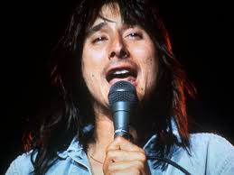

Banda de la semana
Journey
Journey es una banda de rock creada en 1973 en San Francisco, Estados Unidos, por el teclista Gregg Rolie y el guitarrista Neal Schon, integrantes originales de Santana. De estilo rock progresivo en sus inicios, fue cambiando a un estilo más melódico con la incorporación del vocalista Steve Perry en 1978, quien con su voz convirtió a la banda en una de las más destacadas de los años 1980, con ventas de más de 80 millones de discos en todo el mundo convirtiéndolos en uno de los artistas más exitosos de todos los tiempos. Journey alcanzó la cima del éxito en 1981 con el álbum Escape, que contenía canciones como "Open Arms", "Who's Crying Now" y "Don't Stop Believin'". Durante ese período, la banda lanzó una serie de canciones de éxito, incluyendo "Don't Stop Believin'" de 1981, el más vendido en la historia de iTunes


Artista de la semana
Steve Perry
Steve Perry (nacido como Stephen Ray Perry,1 el 22 de enero de 1949, en Hanford, California) es un cantante y compositor estadounidense que se dio a conocer como vocalista de la banda de rock Journey durante 1978–1987 y 1995–1998. Perry tuvo una carrera en solitario muy positiva, aunque fue de breve duración, desde finales de los ochenta hasta mediados de los noventa. En 1984 lanzó el álbum Street Talk que alcanzó el puesto 12 en el Billboard y obtuvo dos discos de platino. En 1994 lanzó al mercado su segunda producción en solitario, For the Love of Strange Medicine, logrando el puesto 15 en el Billboard. La revista Rolling Stone nombró a Perry el 76° mejor cantante de su lista de "Los 100 cantantes más grandes de todos los tiempos".2 El 5 de octubre de 2018 lanza su álbum Traces